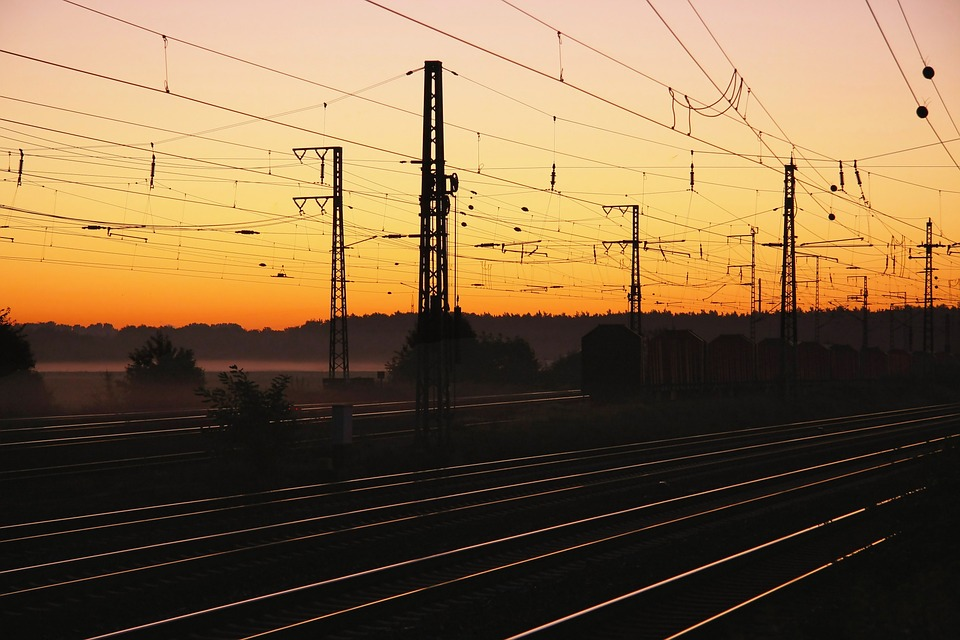

0
Territoires dotés d'un Plan Local d'Électrification
0
Territoires dotés d'un Plan Local d'Électrification
0+
Projets énergétiques recensés sur le territoire national
0 MW
Puissance développée en cinq ans d'activité
0 000
Personnes bénéficiaires de l'éclairage public

L'Agence Nationale de l'Électrification et des Services Énergétiques en milieux rural et périurbain (ANSER) est un établissement public congolais créé par le décret n° 16/014 du 21 avril 2016, à la suite de la libéralisation du secteur de l'électricité instaurée par la loi n° 14/011 du 17 juin 2014. Elle œuvre pour une République Démocratique du Congo où l'énergie devient un véritable levier de développement, accessible à chaque foyer, à chaque école et à chaque entreprise.
À travers la planification, le financement et la coordination de projets structurants, l'ANSER favorise un développement énergétique durable et inclusif, qui réduit les inégalités territoriales et soutient l'essor économique local. Grâce à une approche décentralisée organisée en six pools couvrant les vingt-six provinces du pays, l'Agence mobilise les acteurs publics et privés et met en œuvre des solutions adaptées aux réalités locales, afin que chaque communauté puisse bénéficier d'une énergie fiable.
Élaborer les Plans Locaux d'Électrification des 145 territoires et coordonner des projets adaptés aux besoins réels de chaque localité, pour un développement énergétique équilibré.
Lire plusMobiliser les ressources publiques, parafiscales et privées, puis sécuriser les investissements nécessaires à la construction d'infrastructures électriques durables.
Lire plusAdministrer le Fonds Mwinda, mécanisme de subventions basées sur les résultats, afin de rendre l'électricité abordable pour les ménages ruraux les plus vulnérables.
Lire plusIl n'existe pas de réponse unique à la question de l'accès à l'énergie. Selon la densité de population, la ressource disponible et la distance au réseau existant, l'ANSER retient la technologie la plus pertinente sur le plan technique comme sur le plan économique.
Raccordement des localités périurbaines situées à proximité des réseaux existants, par la construction de lignes de moyenne et de basse tension et l'installation de cabines de transformation.
Déploiement de centrales photovoltaïques couplées à des systèmes de stockage, particulièrement adaptées aux chefs-lieux de territoire éloignés de toute infrastructure de production.
Construction et réhabilitation de micro et mini-centrales hydroélectriques, valorisant le potentiel hydrographique considérable dont dispose la République Démocratique du Congo.
Mise en place de mini-réseaux combinant plusieurs sources, dont la principale est renouvelable, pour garantir la continuité du service électrique dans les zones isolées.
Installation de lampadaires solaires autonomes le long des axes structurants, améliorant la sécurité des habitants et prolongeant les heures d'activité économique.
Diffusion de kits solaires domestiques certifiés et de solutions de cuisson propre et efficace, accompagnée par les subventions du Fonds Mwinda auprès des ménages à faible revenu.

L'ANSER aspire à une RDC où l'énergie devient un levier de développement durable et d'inclusion. Chaque initiative, chaque projet et chaque partenariat vise à rapprocher l'électricité des territoires ruraux et périurbains, pour bâtir un avenir prospère et équitable pour tous.
Un accès à l'énergie pour tous les territoires.
Des solutions modernes pour un réseau fiable.
Des infrastructures respectueuses de l'environnement.
Faire de l'énergie un moteur de croissance.
Chaque projet d'électrification conduit par l'ANSER suit un processus rigoureux, depuis l'analyse des besoins jusqu'à l'accompagnement des opérateurs après la mise en service des infrastructures.
Recensement des besoins territoire par territoire, élaboration des Plans Locaux d'Électrification et constitution du Programme d'Investissements Prioritaires.
Études techniques et environnementales, choix de la technologie la plus adaptée, dimensionnement des installations et montage financier des opérations.
Lancement des appels d'offres, sélection des opérateurs qualifiés, exécution des travaux et supervision permanente de la qualité des ouvrages construits.
Mise en service, formation des équipes locales, suivi des indicateurs de performance et accompagnement des opérateurs dans la durée du service rendu.
L'ANSER mène des projets ambitieux d'électrification rurale et périurbaine à travers tout le pays. Du déploiement de réseaux électriques à la construction de centrales solaires et à la réhabilitation de centrales hydroélectriques, chaque initiative vise à rapprocher l'énergie des communautés et à soutenir le développement local.
qui bénéficient déjà d'un accès fiable à l'électricité et à l'éclairage public.
à travers le pays pour transformer durablement l'accès à l'énergie.


Afin de rapprocher la décision du terrain, l'ANSER a subdivisé le territoire national en six pools d'électrification. Chaque pool dispose d'une équipe chargée d'accompagner techniquement les acteurs provinciaux, d'actualiser les Plans Locaux d'Électrification et de veiller à la bonne exécution des chantiers.


Créé le 24 novembre 2020 sous l'égide de l'ANSER, le Fonds Mwinda est un mécanisme de subventions basées sur les résultats. Il soutient à la fois l'offre et la demande d'électricité, en accordant un subside aux ménages afin de réduire le coût d'accès aux services énergétiques.
Le Fonds cible trois familles de technologies : les solutions individuelles comme les systèmes solaires domestiques, les mini-réseaux dont la source principale est renouvelable, et les solutions de cuisson propre et efficace.
L'ANSER joue un rôle majeur dans le développement de la République Démocratique du Congo. Créée pour accélérer l'accès à l'électricité dans les zones rurales et périurbaines, elle contribue à réduire les inégalités entre les centres urbains et les régions longtemps restées à l'écart du progrès énergétique. Grâce à ses nombreux projets d'électrification, l'Agence favorise l'amélioration des conditions de vie de millions de Congolais.
L'électricité stimule l'entrepreneuriat local, la transformation des produits agricoles et la création de revenus.
Les infrastructures énergétiques favorisent le développement de nouveaux métiers et des chaînes de valeur locales.

Dans les zones rurales, le taux d'électrification est d'environ un pour cent. Le défi à relever d'ici 2030 consiste à porter ce taux à cinquante-deux pour cent : nous savons désormais comment procéder, territoire par territoire.
Suivez l'avancement de nos chantiers, les lancements d'appels à projets et les partenariats noués pour accélérer l'électrification du pays.
Financement
17 septembre 2025
L'ANSER a officiellement lancé le premier appel à projets du Fonds Mwinda, destiné à accélérer l'électrification rurale et périurbaine au moyen de solutions solaires décentralisées, de mini-réseaux et de solutions de cuisson propre.
Lire l'article
Institution
20 juillet 2025
À l'occasion du cinquième anniversaire de son opérationnalisation, l'Agence a présenté un bilan de trente mégawatts développés et annoncé son ambition d'atteindre cinquante-deux pour cent d'accès en milieu rural à l'horizon 2030.
Lire l'article
Projets
11 mars 2025
Sur les quarante-neuf projets retenus dans le Programme d'Investissements Prioritaires, vingt-deux sont achevés et entrent en phase d'inauguration, tandis que les autres poursuivent leur exécution sur le terrain.
Lire l'articleL'ANSER travaille avec les institutions nationales, les partenaires techniques et financiers ainsi que les investisseurs privés pour accélérer l'électrification des milieux rural et périurbain.
Opérateur du secteur, investisseur, collectivité ou partenaire technique : l'ANSER vous accompagne dans le développement de projets d'électrification en milieux rural et périurbain. Échangeons sur vos besoins et vos projets.